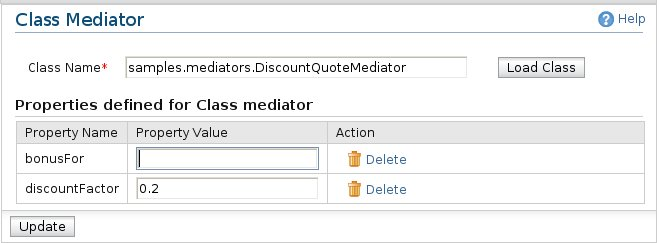

Class Mediator
The class mediator creates an instance of a custom specified class and sets it as a mediator.
The class must implement the org.apache.synapse.api.Mediator interface. If any properties are
specified, the corresponding setter methods are invoked on the class, once, during initialization.

Here are the configuration options related to the class Mediator.
-
Class Name: The class name of the class. You have to give the qualified name of the class and click "Load Class"
button.
-
Properties defined for Class mediator: This list the properties with setter functions of the uploaded class. Following
fields are listed for each property.
-
Property Name: Name of the property.
-
Property Value: The value to be set to the property.
-
Action: Delete the property from the list.